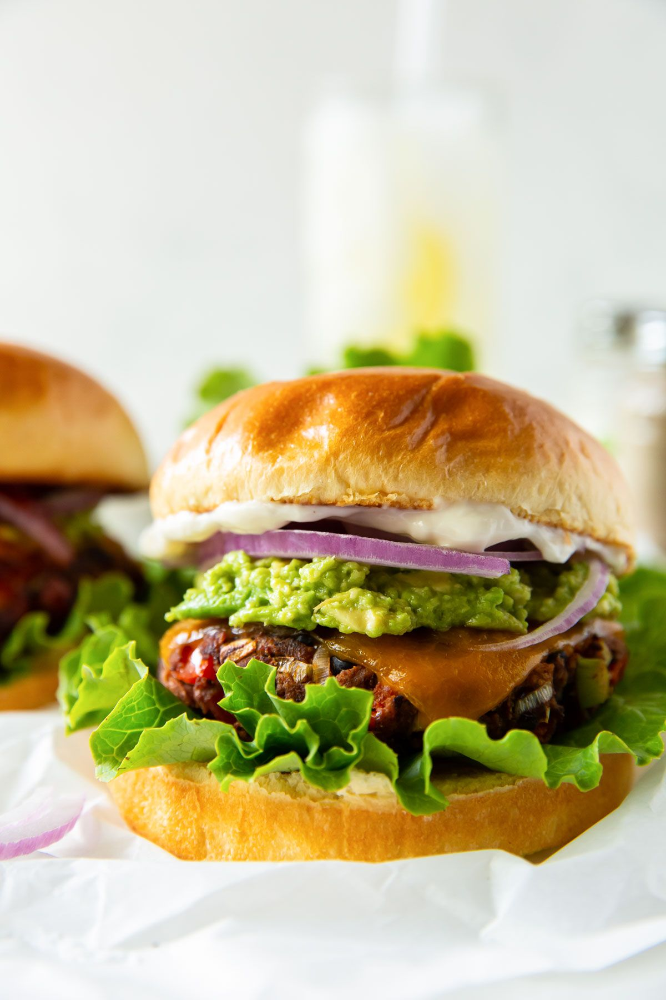

Black Bean Burgers

- Meal
- Dinner
- Serves
- 6 (8 patties — 6 regular + 2 extra for big eaters or lunch)
- Protein
- legume (black beans) + egg — vegetarian
- Cook
- stovetop, oven, or grill · 20 min active / 30 min total · easy
- Make-ahead / leftovers
- yes (shape patties a day ahead or freeze raw between parchment) / yes
- Mediterranean
- yes
- WW tier
- light
- Status
- Trying out (probation)
Kristine's Kitchen black bean burgers: mashed black beans with panko, red bell pepper, green onion, garlic, egg, a little ketchup, and smoky paprika-cumin-chili seasoning — firm enough to grill, browned and crisp in a skillet. Meatless burger night that doesn't fall apart.
Ingredients
- 2 cans (15 oz) black beans, rinsed, drained, and patted dry
- 1 cup panko breadcrumbs
- 2/3 cup finely chopped red bell pepper
- 4 green onions, chopped small
- 4 garlic cloves, minced
- 2 large eggs
- 2 Tbsp ketchup
- 2 tsp smoked paprika
- 1 tsp ground cumin
- 1 tsp chili powder
- 1/2 tsp salt + 1/4 tsp pepper
- 2 Tbsp olive oil (for the skillet)
- To serve: whole-wheat buns, lettuce, tomato, red onion, avocado, cheese slices, ketchup/mustard; oven fries or a big salad
Method
- Mash the beans with a fork or potato masher until mostly mashed with some larger pieces. Add the panko, bell pepper, green onions, and garlic.
- In another bowl whisk the eggs, ketchup, smoked paprika, cumin, chili powder, salt, and pepper. Scrape into the beans and stir until combined.
- Shape into 8 patties about 1/2 inch thick.
- Stovetop: heat 1 Tbsp oil in a cast-iron or nonstick skillet over medium; cook in batches 4–7 minutes per side until browned and 160°F inside. Oven: 375°F on parchment, 13–15 minutes, flipping halfway. Grill: well-oiled grates or a grill basket, medium heat, 4–7 minutes per side.
- Serve on buns with toppings.
Notes
- Scaled ×2 from Kristine's 1 can / 4 burgers — 8 patties covers six with seconds or a lunch.
- Pat the beans really dry — that's what keeps them from going mushy.
- Contains egg; otherwise allergy-free for this family. No hidden fish (ketchup, not Worcestershire).
- Not Greek Turkey Burgers — meatless, Southwest seasoning. Not Black Bean Tacos — patties on buns.
- Mediterranean ✓: olive oil, legumes, vegetables in the patty, whole-wheat buns. light.